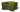

幸运礼盒
这些是其中包含未知内容的项目。
打开它们后，玩家可以从一系列物品中获得一些东西。内容从耗材到稀有迷彩不等。
此容器可能会掉落各种炫酷奖励，包括炮塔和底盘的装备改造、 迷彩、道具、水晶等等。
要查看可能掉落的更新列表，请查看游戏中的«幸运礼盒»部分。
重要提示：一旦您获得了其中一个幸运礼盒，其可能掉落的列表将不会改变，即使发行了一批新的幸运礼盒。
获取幸运礼盒
可以通过多种方式获得幸运礼盒，您可以在商店中购买它们、在战斗中以黑金盒子的形式捕捉它们、
从每日、每周和特殊任务中领取它们、在挑战中获得它们、
从促销代码中获取它们甚至在活动和比赛中赢得他们！
用碎片兑换幸运礼盒
一旦玩家获得 100 个碎片，他们就可以将其兑换成 1x
移动版玩家可以通过幸运选项卡中的进度条查看他们收集碎片的进度。

当玩家有足够的碎片购买容器时，会出现一个红点。
稀有颜色
您在幸运礼盒中获得的物品越好，当它出现时您会看到更酷的效果。
效果的颜色取决于稀有等级，如下面的奖励列表所示。
普通：50%
1000水晶
火焰炮MK1、离子炮MK1、激光炮MK1
猎人中甲MK1、独裁者MK1、黄蜂轻甲MK1、泰坦MK1
稀有：34%
3000水晶
100护甲提升
100伤害提升
100速度提升
100地雷
冰风暴MK1、磁力炮MK1、火龙珠MK1、镭射炮MK1、雷暴炮MK1
蜂王MK1、猛犸象MK1
罕见：10%
10000水晶
100维修工具
一些常见或稀有的迷彩
来自Football Frenzy事件 的足球（国家）迷彩之一。
马格南MK1、火箭炮MK1、极速炮MK1、电磁炮MK1、滑膛炮MK1、特斯拉MK1
阿瑞斯MK1、霍珀MK1、圣骑士MK1
炮塔或底盘的稀有装备改造之一
史诗：5%
25000水晶
史诗迷彩，包括以前的活动迷彩、商店涂装、冰霜和金星
射击效果之一
无人机之一，除了布鲁特斯、亥伯龙神和危机
炮塔或底盘的史诗级装备改造之一
传奇：1%
100000水晶
动画迷彩
炮塔的传奇装备改造之一
每周任务礼盒
这些是特殊容器，只能作为完成每周任务的奖励获得，偶尔也可以作为活动和竞赛的奖励。
每周任务礼盒包含道具、水晶、电池和坦克币。
打开每周补给箱后，玩家将获得所有奖品，所有奖品均相同。
30 维修工具
100 护甲提升
100 伤害提升
100 速度提升
30 地雷
30 电池
10000 水晶
8 坦克硬币
超级礼盒
在特殊活动期超级礼盒并获得超棒的游戏内物品！
与普通幸运礼盒不同，这些礼盒包含可能因当前事件而异的独特奖励。
例如，并非所有皮肤和镜头效果都始终存在于超级礼盒中。
与普通幸运礼盒相比，它们还提高了史诗、传奇和异国情调物品的掉落率。
超级礼盒会变成灰色并标记为“旧的超级礼盒”
如果您的库存中仍有它们，那么当有不同奖励的新批次出现时。旧的潜在奖励与获得时相同。
普通：<1%
1000水晶
稀有：67%
3000水晶
100护甲提升
100伤害提升
100速度提升
100地雷
罕见：20%
10000水晶
100维修工具
一些常见或稀有的迷彩
来自Football Frenzy事件 的足球（国家）迷彩之一。
史诗：10%
25000水晶
史诗迷彩，包括以前的活动迷彩、商店涂装、冰霜和金星
射击效果之一
炮塔或底盘的史诗级装备改造之一
传奇：2%
100000水晶
动画迷彩
炮塔的传奇装备改造之一
异国情调：<1%
皮肤
炮塔或底盘的异国情调装备改造
无人机危机
犰狳防御模块
异国情调的迷彩
硬币箱
商店限时提供的特殊礼盒。它们与早期的对应物 Tankoin-Containers 相似，但奖励不同。
您可以将它们装在一些超级礼盒中，或者以 150个坦克硬币购买 10 个
让您有机会赢取各种超酷奖品，包括坦克硬币
硬币箱的内容
常见
1000水晶
30 护甲提升
30 伤害提升
30 速度提升
30 地雷
1 坦克硬币
罕见
2000水晶
30 维修工具
15 电池
10 坦克硬币
稀有
5000水晶
30 坦克硬币
40 坦克硬币
50 坦克硬币
史诗
15000 水晶
100 坦克硬币
200 坦克硬币
300 坦克硬币
传奇
30000 水晶
500 坦克硬币
1000 坦克硬币
2000 坦克硬币
3000 坦克硬币
异国情调
100000 坦克硬币
皮肤礼盒
打开这个礼盒并获得酷炫的皮肤！
每个人都可以从可用奖品列表中随机掉落 XT、LC或PR皮肤。
最终完成您的收藏的好方法！
可以在商店以特价购买皮肤礼盒。它们有时也会在社区竞赛中被赠送。它们也可以作为奖励在特殊活动中获得